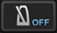

Vorbereitungsarbeiten
BPM & Beatgrid
Durch richtiges Anpassen des Beatgrids (und BPM) im Voraus können Cues, Loops und Hot Cues auf die Beat-Positionen eingestellt werden. (Quantisierungsfunktion)
 Für Einzelheiten über die Wiedergabefunktionen mit dem Beatgrid und BPM (Synchronisieren, Mischen usw.) siehe Bedienungsanleitung der betreffenden DJ-Einheit.
Für Einzelheiten über die Wiedergabefunktionen mit dem Beatgrid und BPM (Synchronisieren, Mischen usw.) siehe Bedienungsanleitung der betreffenden DJ-Einheit.
1Wenn [Prepare] im Top-Menü angetippt wird, wird das Browser-Feld geöffnet.
- Beatgrids können nicht angepasst werden, wenn sie mit DJ-Playern verknüpft sind. Dazu kehren Sie zum Top-Menü zurück und brechen die Verknüpfung kurzzeitig ab, und öffnen Sie dann das Browser-Feld.
2Tippen Sie auf den Track, dessen Beatgrid Sie anpassen wollen.
Das Player-Feld erscheint, und der Track wird abgespielt.
3Tippen Sie  in der unteren rechten Ecke der Wellenform-Anzeige an, um die Einstelloptionen für das Beatgrid zu öffnen.
in der unteren rechten Ecke der Wellenform-Anzeige an, um die Einstelloptionen für das Beatgrid zu öffnen.

Die Anzeige der Beat-Position wechselt von Punkten auf eine senkrechte Linie um.
4Tippen Sie auf [ ] im Player-Feld, um die Wiedergabe auf Pause zu stellen.
] im Player-Feld, um die Wiedergabe auf Pause zu stellen.
5Bewegen Sie die vergrößerte Wellenform-Anzeige nach links und rechts, um die Anpassung so vorzunehmen, dass der Beat über der weißen senkrechten Linie in der Mitte positioniert ist.
- Die vergrößerte Wellenform-Anzeige kann durch Auf- und zuziehen vergrößert oder verkleinert werden. Die Pausenposition kann in Einheiten von Millisekunden durch Vergrößern und Bewegen bewegt werden.
6Wenn  angetippt wird, verschiebt sich das gesamte Beatgrid mit der weißen senkrechten Linie in Bezug zur Beat-Position.
angetippt wird, verschiebt sich das gesamte Beatgrid mit der weißen senkrechten Linie in Bezug zur Beat-Position.
Um nur die Sektion des Beatgrid hinter der zentralen weißen senkrechten Linie zu verschieben, tippen Sie auf  anstelle auf
anstelle auf  .
.
7Tippen Sie  in der unteren rechten Ecke der Wellenform-Anzeige an, um die Einstelloptionen für das Beatgrid zu schließen.
in der unteren rechten Ecke der Wellenform-Anzeige an, um die Einstelloptionen für das Beatgrid zu schließen.
 Hinweis
Hinweis
Zum Abbrechen aller angepassten Beat-Positionen und der BPM und zum Wiederherstellen der ursprünglichen Einstellungen analysieren Sie die Musikdatei erneut.

Einstelloptionen für das Beatgrid
Für die Einstelloptionen für das Beatgrid siehe Tabelle unten.
Icon | Beschreibung |
Das gesamte Beatgrid verschiebt sich in Bezug auf die Position, bei der der Track momentan pausiert wird (die zentrale weiße senkrechte Linie). | |
Diese bewegen das Beatgrid in Einheiten von 1 ms nach links oder rechts.
| |
Diese verringert die Abstände im Beatgrid um 1 ms. | |
Diese vergrößert die Abstände im Beatgrid um 1 ms. | |
Der BPM-Wert wird mit 2 multipliziert (verringert die Abstände im Beatgrid um 1/2). | |
Der BPM-Wert wird mit 1/2 geteilt (wodurch die Abstände im Beatgrid verdoppelt werden). | |
Der Startpunkt zum Justieren des Beatgrid wird kurzzeitig auf die Position verschoben, bei der der Track momentan pausiert wird (die zentrale weiße senkrechte Linie), und nur der Abschnitt des Beatgrid über den Startpunkt hinweg verschiebt sich in Bezug auf den Startpunkt. Bis die Startposition abgebrochen wird, werden nur die Beat-Positionen nach dem Startpunkt als senkrechte Linien angezeigt, und das Beatgrid-Einstellverfahren betrifft nur die Sektion des Beatgrid nach dem Startpunkt. | |
Dies hebt den kurzzeitig eingestellten Startpunkt zum Einstellen des Beatgrid auf. Die Positionen aller Beats werden erneut als senkrechte Linien angezeigt, und das Beatgrid-Einstellverfahren betrifft das erneut gesamte Beatgrid. | |
Dies macht das vorher ausgeführte Verfarhren rückgängig. Bis zu 10 vorherige Vorgänge können rückgängig gemacht werden. | |
 | Dies schaltet den gehörten Ton des Metronoms bei der Wiedergabe aus und ein und schaltet dessen Lautstärke um (zwischen hoch, mittel und niedrig). Wenn berührt behalten, kann der Ton gewählt werden. |
Verwenden Sie dies zum Eingeben und Bearbeiten des BPM-Werts. Die Abstände im Beatgrid ändern sich entsprechend dem eingegebenen BPM-Wert. | |
Die Beat-Position, die der weißen senkrechten Linie in der Mitte der vergrößerten Wellenform-Anzeige am nächsten ist, wird durch eine rote Linie als erster Beat im Takt markiert. Rote Linien, die den ersten Beat im Takt markieren, werden alle vier Beats im Beatgrid, vom Anfang bis zum Ende des Tracks, angezeigt. |